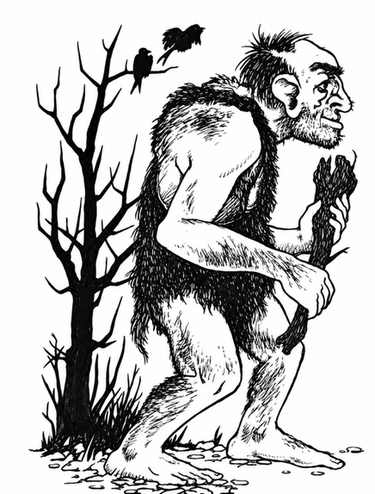

山丘巨人 · Hill Giant
 |
|
山丘巨人总是居住在洞穴或类似的地下住所，巢穴通常位于偏远地区。巢穴中有 50% 概率另有守卫生物：2–8 只恐狼（50%）、1–3 只巨蜥（30%），或 2–8 个食人魔（20%）。若巢穴中遇到 4 只以上，编号 5、7、9 的是巨人女性（6 颗生命骰，伤害按食人魔计算），编号 6、8、10 的是幼年山丘巨人（掷百分骰确定体型）。
成年山丘巨人能将石块掷至 1–20 寸远，命中造成 2–16 点伤害；50% 的山丘巨人还会说食人魔语。
外观。 山丘巨人肤色从黄褐色到红棕色不等，头发棕色至黑色，眼睛带红边。它们通常穿粗糙的兽皮衣，使用任何能找到的武器，但偏爱棍棒。